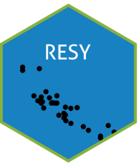

Remove taxonomic authorities from scientific names
resy_clean_names.RdStrips author citations from scientific plant names while keeping the
taxonomic structure that expert-system names depend on, so that names from
different taxonomic backbones resolve against the canonical names and
synonyms of an expert system. The genus and species epithet are always kept.
Infraspecific rank markers (subsp., var., f., ...) are
kept together with their epithet. Aggregate and collective markers
(agg., aggr., coll., s.l., s.str.,
s.lat.) stand alone and are kept in place, including when they trail a
name with no following epithet ("Taraxacum officinale agg.") or follow
an infraspecific epithet ("Aconitum napellus subsp. firmum s.l.").
The sensu lato and sensu stricto qualifiers (in any of the
forms s.l., s. l., sens. lat., sensu lato, and the
stricto equivalents) are normalised to s.l. / s.str. and
kept; a sensu <author> concept attribution (for example
"aggr. sensu Buser") is dropped, to match the bare form the expert
system uses as its canonical name. The hybrid sign (ASCII x or the
multiplication sign) is kept: for a nothospecies ("Salix x rubens"), a
leading nothogenus ("x Ammocalamagrostis baltica"), and a hybrid
formula joining two taxa ("Betula pendula x pubescens",
"Elytrigia repens x Leymus arenarius"), so a hybrid is never collapsed
onto one of its parents. Names with fewer than two words are returned
unchanged.
Value
A character vector the same length as x with author citations
removed and taxonomic structure preserved. NA values are preserved.
Examples
resy_clean_names(c(
"Fagus sylvatica L.",
"Epipactis helleborine (L.) Crantz subsp. helleborine",
"Senecio ovatus (G.Gaertn., B.Mey. & Scherb.) Willd.",
"Taraxacum officinale agg.",
"Festuca ovina s. l.",
"Alchemilla vulgaris aggr. sensu Buser",
"Mentha x verticillata aggr."
))
#> [1] "Fagus sylvatica"
#> [2] "Epipactis helleborine subsp. helleborine"
#> [3] "Senecio ovatus"
#> [4] "Taraxacum officinale agg."
#> [5] "Festuca ovina s.l."
#> [6] "Alchemilla vulgaris aggr."
#> [7] "Mentha x verticillata aggr."